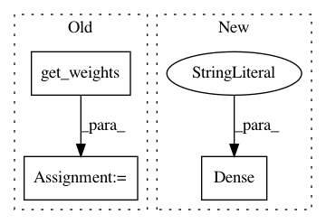

6cb84f4b742861e823015cac18535efa468b0d81,autokeras/layer_transformer.py,,dense_to_wider_layer,#Any#Any#Any#,45
Before Change
def dense_to_wider_layer(pre_layer, next_layer, n_add_units):
n_units1 = pre_layer.get_weights().shape[0]
n_units2 = pre_layer.get_weights().shape[1]
n_units3 = next_layer.get_weights().shape[1]
teacher_w1 = pre_layer.get_weights()[0]
teacher_b1 = pre_layer.get_weights()[1]
teacher_w2 = next_layer.get_weights()[0]
After Change
student_w2 = np.concatenate((student_w2, new_weight), axis=0)
student_w2[teacher_index, :] = new_weight
new_pre_layer = Dense(n_units2 + n_add_units, input_shape=(n_units1,), activation="relu")
new_pre_layer.build((None, n_units1))
new_pre_layer.set_weights((student_w1, student_b1))
new_next_layer = Dense(n_units3, activation="relu")
new_next_layer.build((None, n_units2 + n_add_units))
In pattern: SUPERPATTERN
Frequency: 3
Non-data size: 3
Instances
Project Name: jhfjhfj1/autokeras
Commit Name: 6cb84f4b742861e823015cac18535efa468b0d81
Time: 2017-12-15
Author: jhfjhfj1@gmail.com
File Name: autokeras/layer_transformer.py
Class Name:
Method Name: dense_to_wider_layer
Project Name: philipperemy/keras-tcn
Commit Name: 0cfe82c6beb9a28a5ff7da81b86fa0e93c388f14
Time: 2019-11-20
Author: premy@cogent.co.jp
File Name: tasks/save_reload_model.py
Class Name:
Method Name: